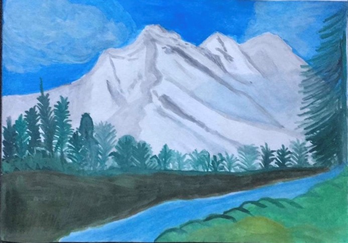
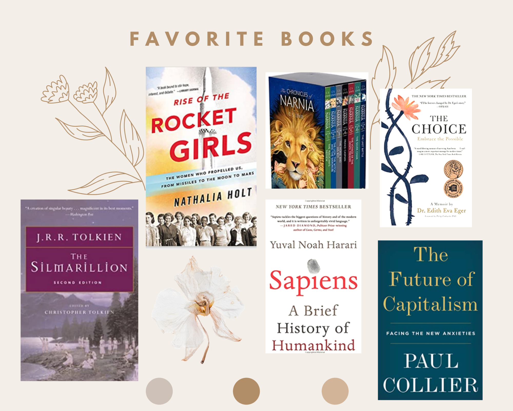
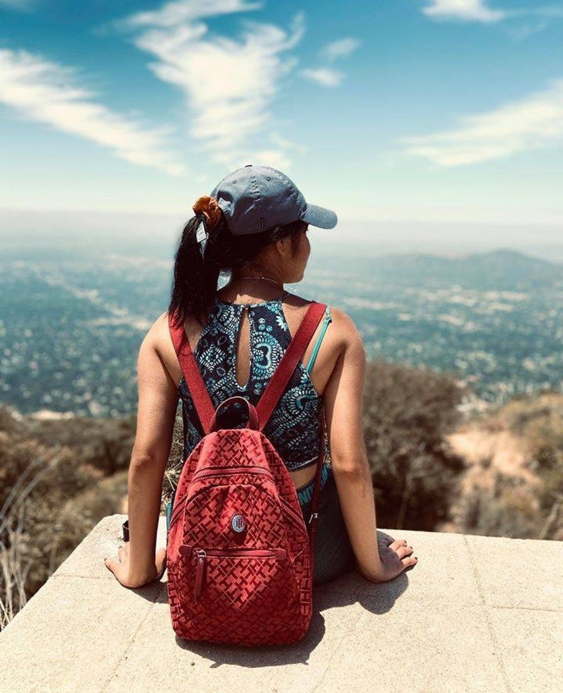
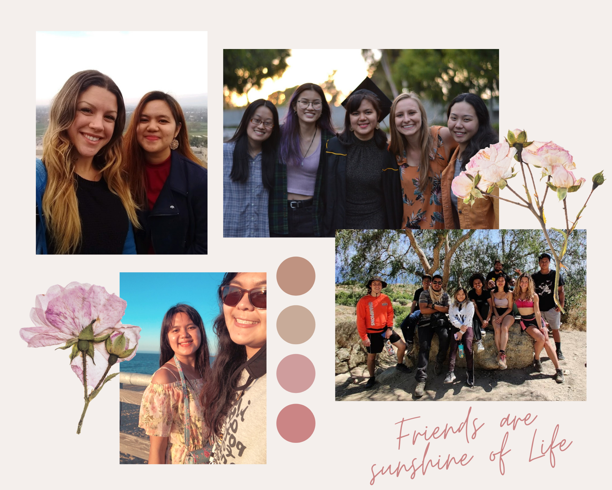
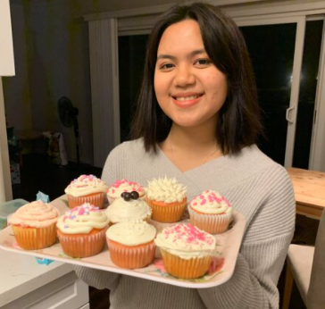

*********** Please Click on Menu Tabs to Explore ***********
I love being one of the creative Women in Engineering
- Yamin Y
Hello, My name is Yamin Yee, I am a recent graduate in Computer Engineering majoring at California State University, Long Beach. I graduated on May 19, 2020 along with an honor as Computer Engineering and Computer Science Leadership and Service Award, Class of 2020.
I also had summer scholar intern at HP Inc and completed in July 2020. It was a remote internship and I was able to participate in several projects for the campaigns for COVID-19 related products. During the period of internship, I managed how a global business operates, and how business decisions are made. I was also trained to explore technology in core business areas including gaming, 3D Print, Personal Computers, data analytics and sales. I led the managing the meeting for an individual group which I was assigned to be part of to do action items and brainstorming ideas for campaigns. My team worked on the mental health awareness campaign product especially focusing on COVID-19,and how people were able to get help for their stress, and mental issues through the quarantine period. We also had to calculate the budget of our camping product and we had to give a presentation as an individual group. It helped me to develop personal skills such as interviewing, building a personal brand, and practicing a growth mindset. I also had to identify the behaviors and mindsets required to take risks and innovate for the future.
Over the past two years, I learned some programming languages including Verilog FPGA, and I learned System on Chip Design class, Operating System and they open my mind window to get into Computer Engineering stuffs, programming and chips more. I am really enthusiastic upon building circuits, programming and solving problems. I finished the course project of the Single Cycle MIPS Processor by using FPGA verilog and also assembly language mainly focused on RISC-V. I also finished a course project which was URAT using FPGA Verilog. I also completed my Senior Design project which was Blue Jay- Food Spy and I used Python with RaspberryPi3 to track the temperature and also take pictures by using a pi camera. The pi camera sent either pictures or videos of the inside fridge. I used the IP address to send the update data of pi after every one minute.
I also created this Website on my own with my own algorithm and my draft by designing with HTML.
Also I was highly involved in campus activities such as I was President of Engineering Student Council, Vice President of Society of Women Engineers and, also I was Senator of College of Engineering, Secretary of Associated Engineering Student Council , University Student Union, Board of Trustee, and Public Relation Chair of Society of Asian Scientists and Engineers. I interned at one of the institutes, and I also used to be a peer volunteer before I transferred to CSULB back in community college. I was also an officer of the volunteering club as a graphic designer back in my community college.
During my free time, I like to paint, read fantasy books and hang out with my friends by playing board games with them, and my favorite board game is Ticket to Ride. Sometimes I compose the songs on my own by playing the ukulele as well. I also love to bike around my neighbor as it is good for my physical health and also it relaxes me during my free time.
@2021 Yamin-Yee. All Rights Reserved

I love the work of art and any type of painting. Since my job is writing the codes and checking all the issues in front of Computers and sometimes it is good to be away from screen once in a while,and work on something which gives you peace and joy. Usually I love to paint and draw the landscapes and also the abstract arts. I usually like to paint some nature views which can potray like peace. I like nature thing even tho I am an Engineer ,it is always good that there is something makes you happy without using devices realted with technology once in a while.
You can see my work of art as shown in the picture on the right side. I named the painting as "Mountation of Peace".
My favroite artist is Thomas Kinkade. He painted all these beautiful and peaceful paintings such as waterfalls, light houses, beaches,some American old towns,and really nice and beautiful houses. He also depicted various Christian themes including the Christian cross and churches. Check Out All Thomas Kinkade's Arts Here.

My reading style has been shifting in many diffrent generes through out the years. I used to read a lot of scientific books and also self-developement books but lately after I graduated and I have been spending my free time reading a lot of fantasy books, biological books, and also books reatled psychology which will teach you to understand your psychological thinkings and how to cope through the hard times.
My favorite books are the sereies of "The Chronicles of Narnia", written by C.S Lewis, Rise of the Rocket Girls, The Silmarillion by J.R.R Tolkien, The Choice by Edith Eger, Sapiens, The Future of Capitalism and all the biological books about queens of Europe.
I don't like to read through devices and I love reading the physical books. I also like to have a little library to safe physical books and so it will let me get away from devices and just read the physical books without any discrations.
My favorite quote of the reading as following:

I love exploring in nature and enjoy the wild life. It is always good to get away from city life once in a while to have a fresh air and enjoy the mother of nature.I feel like all our daily life has been filled with so many noises with school, work, city life, many other things, and sometimes it is impornt to treat ourselves with quite time to think and process.Also phyiscal exercise is really important and so hiking hleps me a lot to reduce stress and at the same time I can be able to enjoy the nature.
I have been to so many hiking spots but the one in the picture on the right was at the Echo Mouncation,is a mountain promontory of the San Gabriel Mountains, in the Angeles National Forest above Altadena, in Los Angeles County, California. I could able to see the whole entire LA from there and it was so breath taking view.
I hiked to Hollywood Sign, Santa Ynez Falls, Eaton Canyon Falls, Portuguese Bend Loop and etc.
If you are a person who love hiking, I definietly recoomend you to use this hiking app which will give you the overall of each hike whether it is hard or easy and you can check out all the reviews from people as well. Please see the link as following: Check Out "All Trails" Here!

For me, spending time with people I care is really important. Good freinds are really important to have in life. Good friends don't care about your title or what you have, good friends can help you during good times and provide support during bad times. Good friends will be there for you and at the same time, they will be there for you no matter how far we are away.
I usually give time to my friends even sometimes life can be busy a lot. I usually go hiking, having bondfire, small gathering and so sometimes playing board games with them.
It is also important check in your friends when we are living under busy world and also important to support them emotionally as well. Friends don't make you feel awful but friends make you feel you belong with them. We all deserve to have friends like those in our lives.
This is my favorite friendship quote:

Baking and Cooking is one of my Biggest Hobbies and another way to reduce my stress.
I love to try different recipes for cooking and also for baking.I always check out all the recipes on YouTube to Bake or Cook. I love to cook Pasta and some confort food which will help me feel good after I eat.
I love to bake cupcake especially by myself since I know what type of flavor I want and the foresting and decoration!
My favorite food can be anything which is spicy or seafood. I don't like sweet much but I like to eat sweet once in a while because our human bodies need sweet anyway.
Here are list of websites and recipes you may enjoy to cook or bake on your own:
@2021 Yamin-Yee. All Rights Reserved